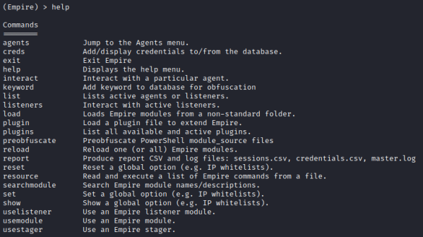

Empire Tool (post exploitation framework)
Empire Tool (post exploitation framework)
Empire: https://github.com/EmpireProject/Empire The PowerShell Empire project is no longer supported from January 2019BC-SECURITY Empire: https://github.com/BC-SECURITY/Empire This is an up to date date fork of Empire, others anyway are been created
◇ Install(kali):
root@kali:/# sudo apt install powershell-empire #on Kali Linux
◇ Install(GitHub):
root@kali:/# cd /root/bin/
root@kali:/# git clone --recursive https://github.com/BC-SECURITY/Empire.git
root@kali:/# cd Empire
root@kali:/# sudo ./setup/install.sh
root@kali:/# sudo poetry install
root@kali:/# sudo poetry run python empire
Empire is primarily a post-exploitation framework, differently from metasploit which its exploits are designed primarily to gain initial access
Empire use:
• PowerShell on Windows (require PowerShell version 2 that is pre-installed since Windows 7)
• Python on Linux and macOS (require Python 2.6 or 2.7)
To run BC-SECURITY Empire:root@kali:/# powershell-empire
if give error, with some modules not found, install them by:
root@kali:/# sudo pip3 install [module]
commands available:
